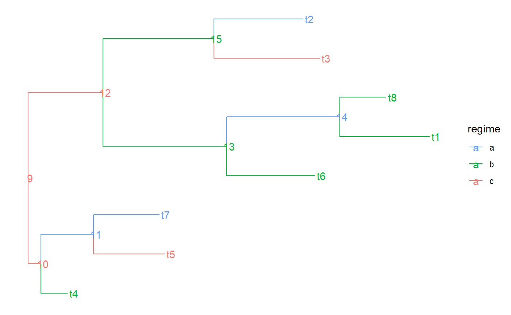
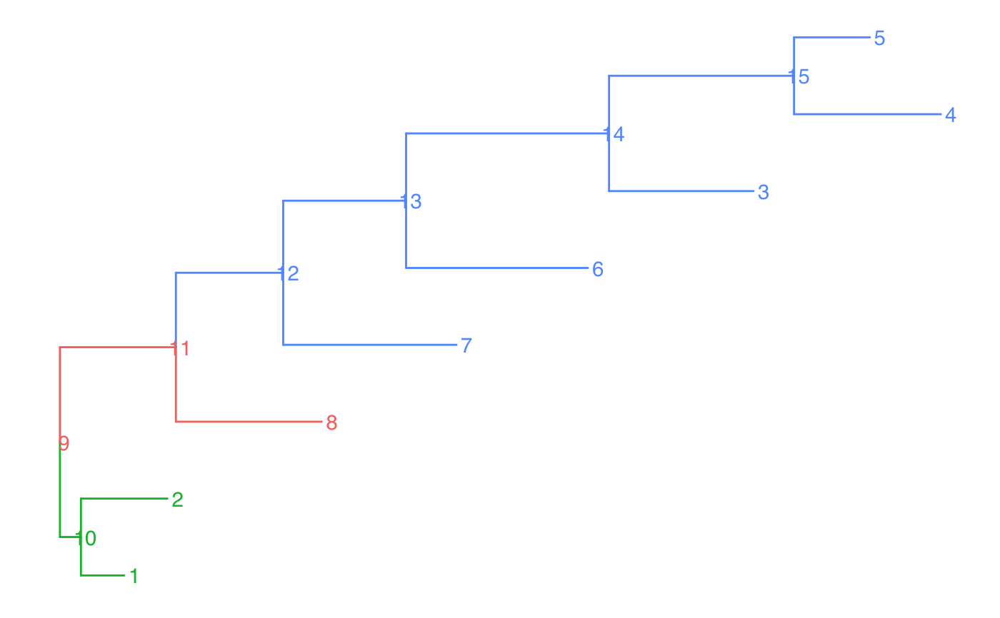
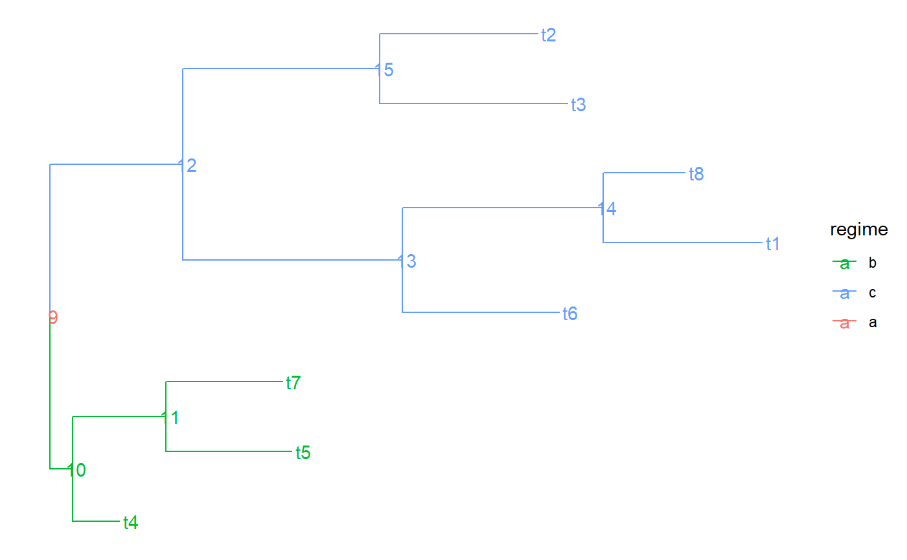

PCMTree is class that inherits from the class 'phylo' in the R-package 'ape'. Thus, all the functions working on a phylo object would work in the same way if they recieve as argument an object of class 'PCMTree'. A PCMTree object has the following members in addition to the regular members ('tip.label', 'node.label', 'edge', 'edge.length') found in a regular phylo object:
a character vector having as many elements as there are branches in the tree (corresponding to the rows in `tree$edge`). Each element denotes the name of the part to which the corresponding branch belongs. A part in the tree represents a connected subset of its nodes and the branches leading to these nodes. A partition of the tree represents the splitting of the tree into a number of parts. Visually, a partition can be represented as a coloring of the tree, in which no color is assigned to more than one part. In other words, if two branches in the tree are connected by the same color, they either share a node, or all the branches on the path in the tree connecting these two branches have the same color. Formally, we define a partition of the tree as any set of nodes in the tree that includes the root. Each node in this set defines a part as the set of its descendant nodes that can be reached without traversing another partition node. We name each part by the label of its most ancestral node, that is, the node in it, which is closest to the root fo the tree. The value of edge.part for an edge in the tree is the name of the part that contsin the node ot which the edge is pointing.
a named vector of size the number of parts in the tree. The names correspond to part-names whereas the values denote the ids or character names of regimes in a PCM object.
The constructor PCMTree() returns an object of call
PCMTree(tree)
| tree | a phylo object. If this is already a PCMTree object, a copy of this object will be returned. |
|---|
an object of class PCMTree. This is a copy of the passed phylo object which is guaranteed to have node.label, edge.part and a part.regime entries set.
#> NULLtree$edge.part#> NULLtree$part.regime#> NULLtree$edge.regime#> NULL# In previous version regimes were assigned directly to the edges via # tree$edge.regime. This is supported but not recommended anymore: tree$edge.regime <- sample( letters[1:3], size = PCMTreeNumNodes(tree) - 1, replace = TRUE) tree.a <- PCMTree(tree) PCMTreeGetLabels(tree.a)#> [1] "1" "2" "3" "4" "5" "6" "7" "8" "9" "10" "11" "12" "13" "14" "15"tree.a$node.label#> [1] "9" "10" "11" "12" "13" "14" "15"tree.a$edge.part#> [1] "9" "9" "2" "9" "12" "12" "14" "14" "15" "15" "5" "6" "7" "8"tree.a$part.regime#> 9 2 12 8 7 14 6 15 5 #> "a" "b" "c" "c" "a" "a" "b" "c" "a"# this is set to NULL - starting from PCMBase 1.2.9 all of the information # for the regimes is stored in tree$edge.part and tree$part.regime. tree.a$edge.regime#> NULLPCMTreeGetPartition(tree.a)#> 9 2 12 8 7 14 6 15 5 #> 9 2 12 8 7 14 6 15 5PCMTreeGetPartNames(tree.a)#> [1] "9" "2" "12" "8" "7" "14" "6" "15" "5"PCMTreeGetPartRegimes(tree.a)#> 9 2 12 8 7 14 6 15 5 #> "a" "b" "c" "c" "a" "a" "b" "c" "a"# let's see how the tree looks like#># This is the recommended way to set a partition on the tree PCMTreeSetPartition(tree.a, c(10, 12)) PCMTreeGetPartition(tree.a)#> 9 10 12 #> 9 10 12PCMTreeGetPartNames(tree.a)#> [1] "9" "10" "12"PCMTreeGetPartRegimes(tree.a)#> 9 10 12 #> 1 2 3#> [1] "9" "12" "12"#> [1] "9" "12" "12"#> 9 10 12 #> 9 10 12PCMTreeGetPartNames(tree.a)#> [1] "9" "10" "12"PCMTreeGetPartRegimes(tree.a)#> 9 10 12 #> "a" "b" "c"